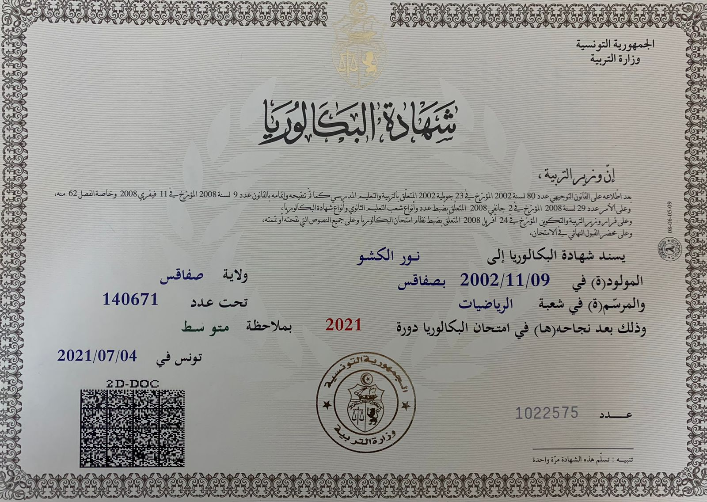

En savoir plus
Sur moi
Je suis en première année du cycle ingénieur en informatique à l'IIT. Cette année, j'ai acquis des bases solides en programmation, structures de données et systèmes d'exploitation, tout en développant mes compétences pratiques à travers des travaux en laboratoire. Cette formation renforce mon intérêt pour l'informatique et me prépare à relever de nouveaux défis dans les années à venir.

Cycle de Licence
Génie Logiciel Et Système d'Informations
Institut International de Technologie - Sfax
BACCALAURÉAT
MATHÉMATIQUE
Lycée 15 Novembre 1955 - Sfax
